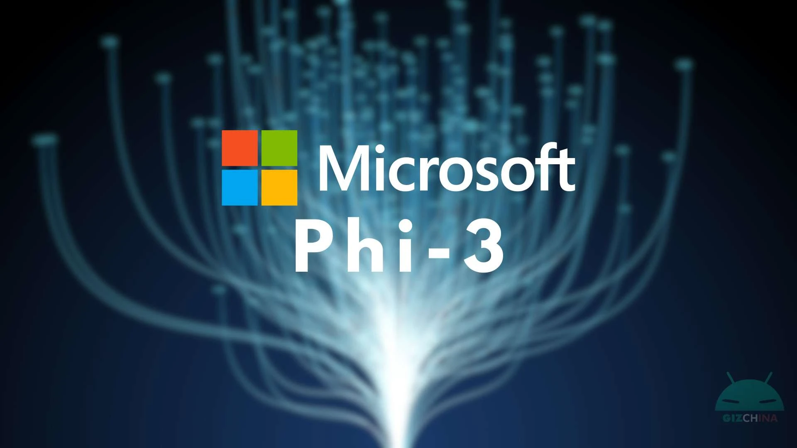
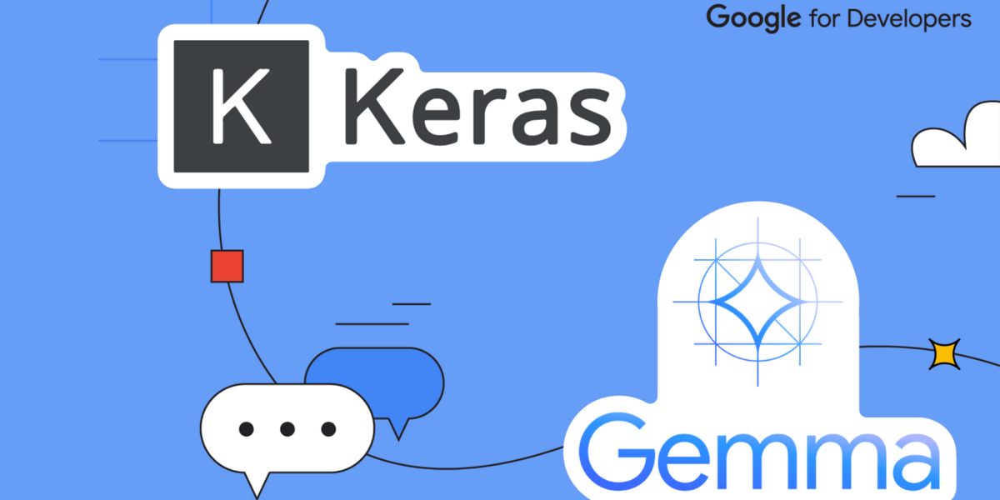
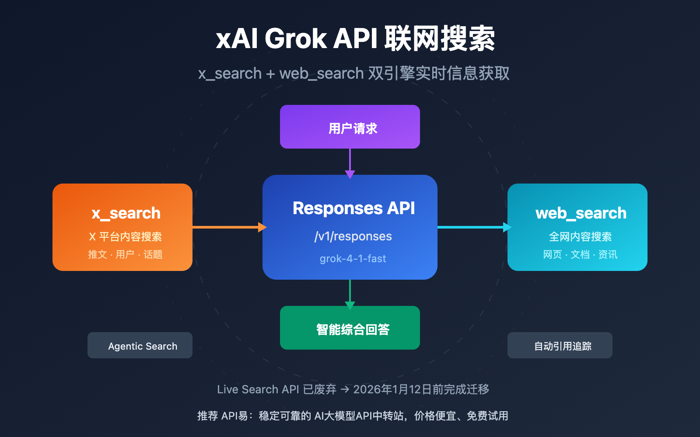
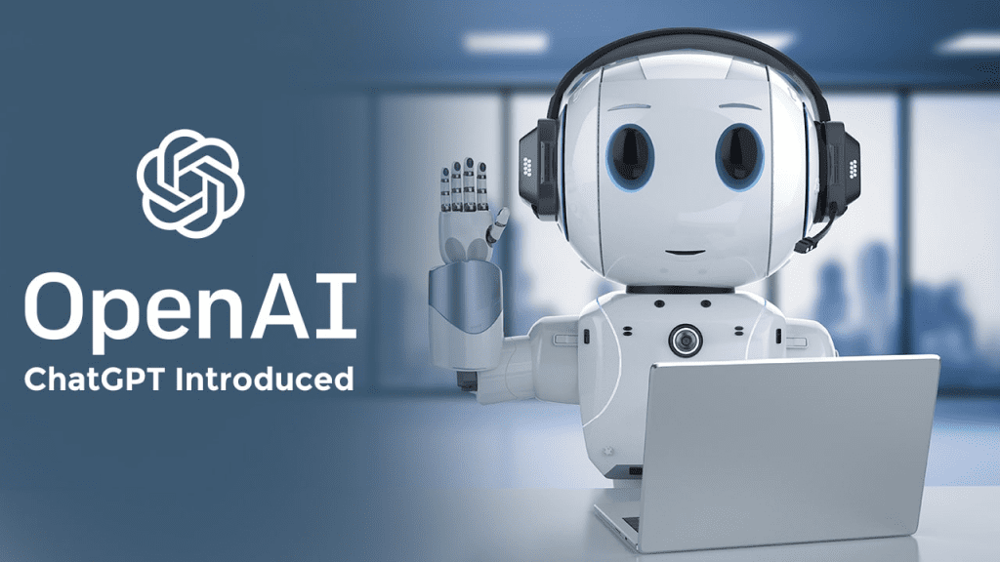
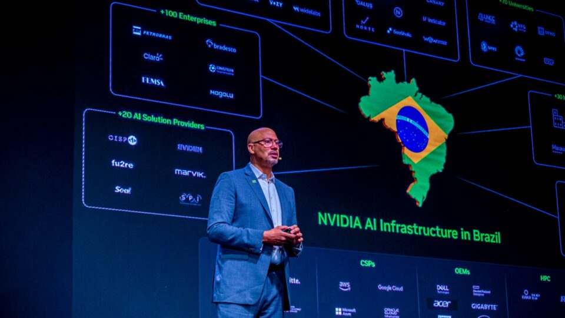
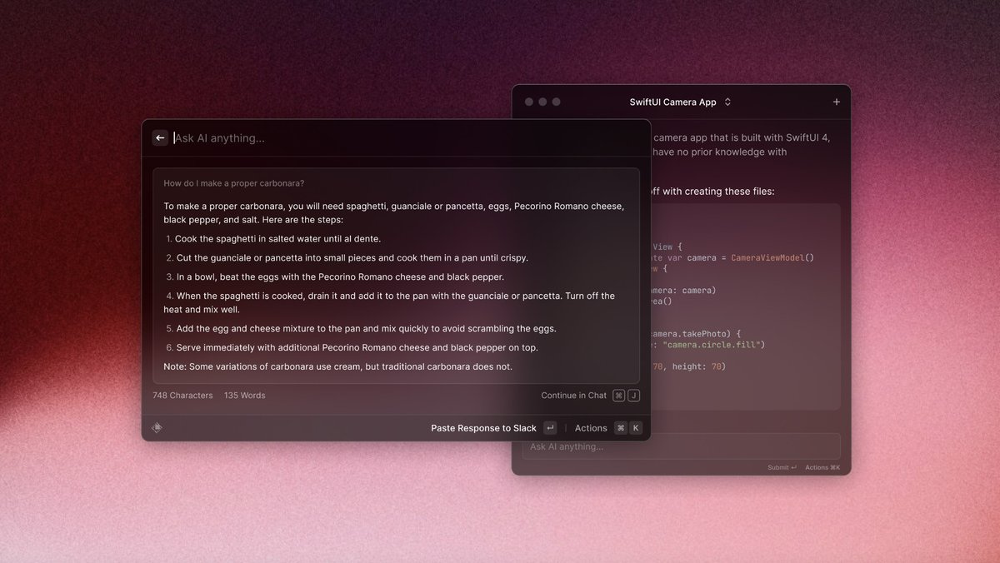
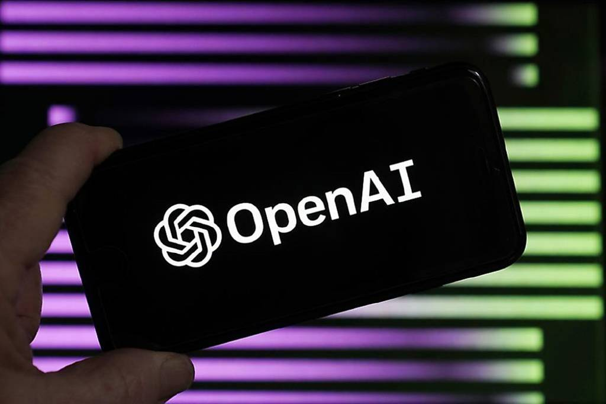
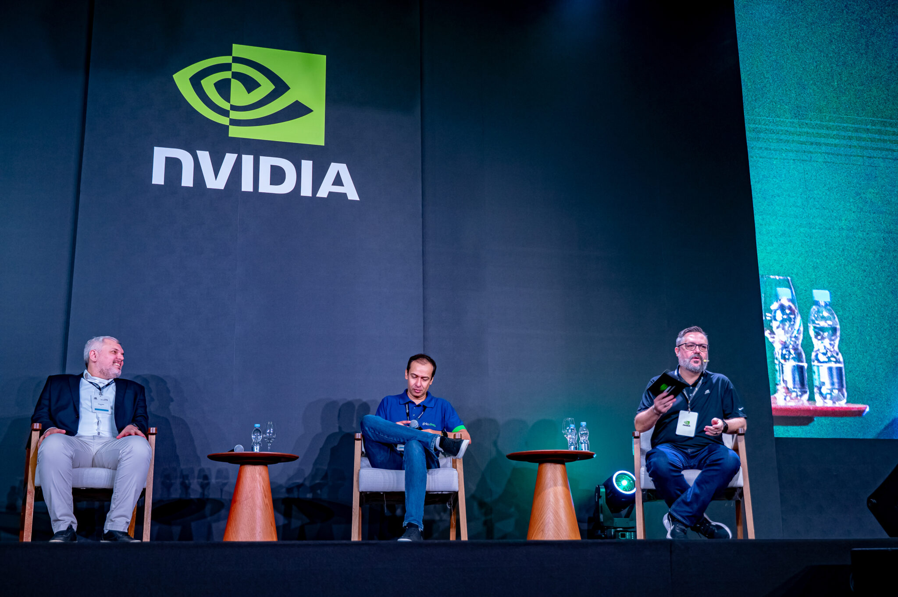
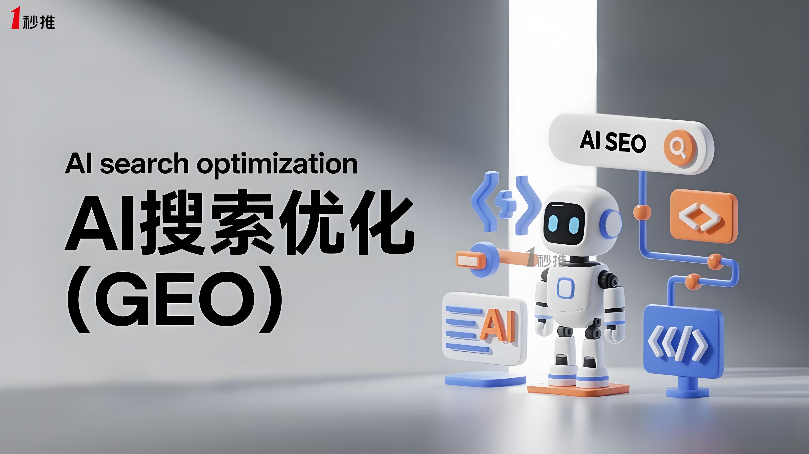

Janet 快车箱
AI Daily Briefing
2026-06-16
VOL 259
今天的共同主线不是谁又把模型分数刷高了一点，而是 AI 公司开始把模型变成交付系统：OpenAI 推 Partner Network，Microsoft 把 Phi 小模型继续压向端侧和多模态，NAVER 与 NVIDIA 把 AI 工厂讲成国家基础设施，HHS 试用 ChatGPT 又把公共部门责任边界摆到桌面上。
对中国创作者和企业来说，这意味着下一轮红利不在“会不会问模型”，而在能不能把 AI 接进销售、客服、财务、内容生产、政企交付和本地设备里。渠道、数据权限、算力位置、审计日志和失败回滚会比单次回答质量更决定采购。
接下来 2-4 周重点盯三件事：OpenAI 伙伴网络会不会把中小服务商卷进认证体系，端侧小模型能不能真压低批量任务成本，主权 AI 工厂和公共部门试点会不会把模型选择从产品问题变成政策问题。

Microsoft 继续围绕 Phi-4 reasoning 系列说明小模型的推理、效率和本地部署价值。Phi 路线押的不是最大参数，而是在端侧、私有环境和低成本任务中把推理能力做得更可用。

Google Developers 持续更新 Gemma 生态，强调开放模型、开发者工具链和本地运行体验。Gemma 系列的价值在于让团队能用更低门槛做原型、微调和端侧实验。

Mistral AI 继续围绕企业级模型、部署选项和欧洲市场推进产品更新。它的叙事一直很清楚：在美国大厂之外，给企业一个更可控、更贴近欧洲监管环境的模型供应选择。

xAI 继续围绕 Grok、X 平台和实时信息入口推进产品更新。Grok 的差异化不是单点能力，而是和社交平台、热点信息、付费订阅以及创作者分发场景绑定。

OpenAI Partner Network 显示，大模型企业化正在从 API 销售转向伙伴交付。认证、培训、集成和行业解决方案会成为模型公司扩大企业收入的关键环节。

NAVER Cloud 与 NVIDIA 的主权 AI 工厂叙事说明，AI 基础设施正从商业云服务变成政策、语言、数据和产业安全的一部分。算力在哪里、数据怎么流、模型由谁维护，会变成采购前置问题。
HHS 试用 ChatGPT 的报道把公共部门 AI 的核心矛盾摆出来：政府想要效率，但系统牵涉医保、公共资金和敏感人群，任何自动化都必须留下可解释、可复核和可追责的链路。

Perplexity 与出版商相关谈判折射出 AI 搜索的新矛盾：答案引擎需要内容供给，但内容方不愿只做免费训练料和引用背景。搜索分发、授权和收入分成会继续拉扯。

OpenAI 建立伙伴网络，说明企业 AI 预算会从单纯模型订阅继续流向咨询、集成、培训和行业解决方案。谁能把模型变成可验收流程，谁就能拿走更高客单价。

主权 AI 工厂叙事会推高本地云、数据中心、GPU 集群和合规服务的战略价值。客户越重视数据和政策边界，本地基础设施供应商越有议价空间。

AI 搜索与出版商收入分享谈判，会影响内容公司的估值逻辑。未来流量不只来自搜索点击，也可能来自答案引用、授权收入、数据合作和平台分成。

Google NotebookLM 继续作为资料整理、问答、摘要和音频概览工具扩展使用场景。它把个人资料库变成可对话的研究桌面，适合处理长文档、报告、课程材料和选题资料。